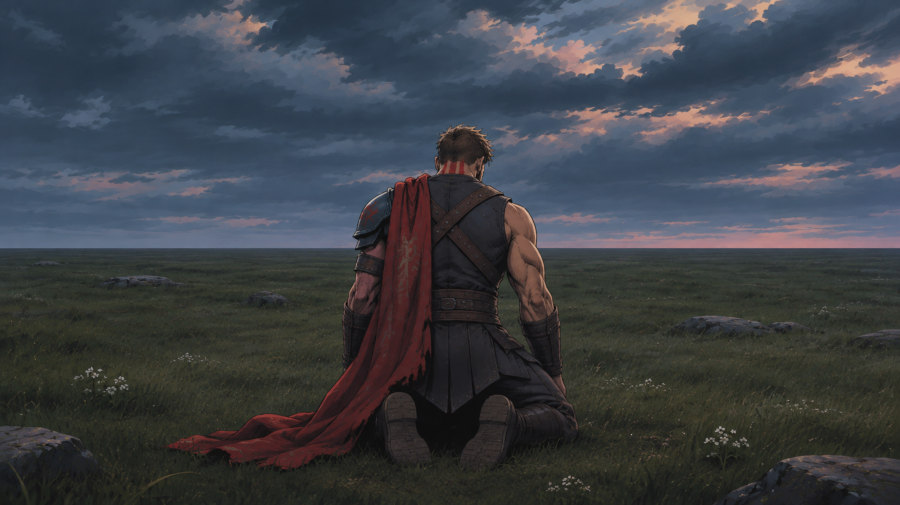
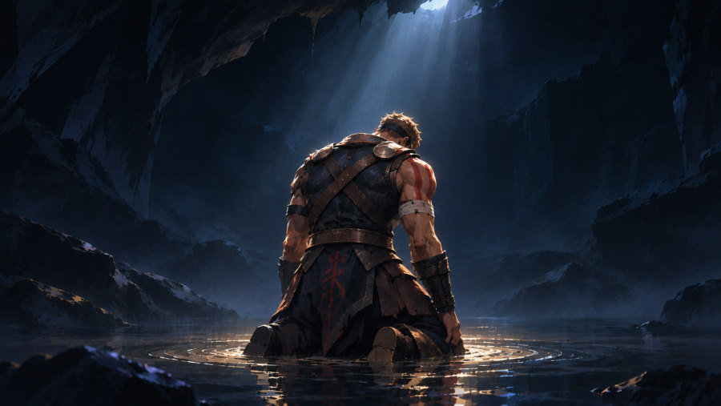
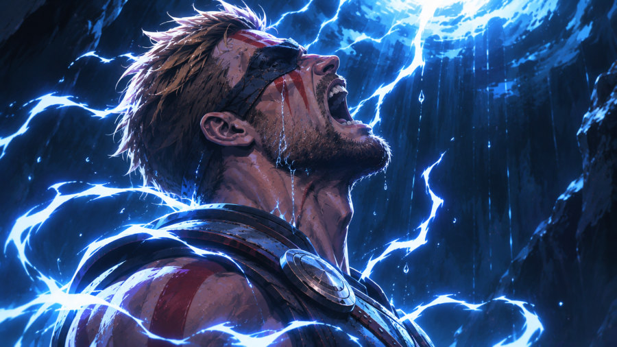
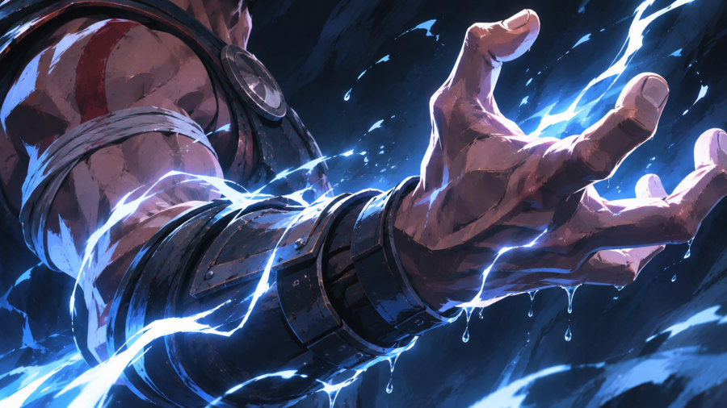

Gücünü kaybetmiş bir savaşçı tanrının fırtınalı bir ovada diz çöküp, öfkesiyle yeniden şimşeği çağırdığı sinematik bir kısa film. Karakter tasarımından anahtar karelere ve sahne üretimine kadar tüm süreç yapay zekâ ile kurgulandı.



